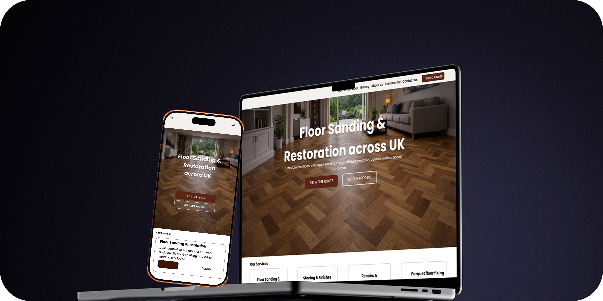

Client Case Study
MJ Sanding
A redesign and rebuild of a flooring services website aimed at presenting services clearly and making it easier for customers to request a quote.

Project Overview
MJ Sanding is a UK-based floor sanding and restoration company. The project involved replacing an outdated template-based website with a cleaner and more structured site that helps visitors understand the services offered and easily request a quote.
I worked across the full process — restructuring the site layout, designing the interface, building the frontend, and managing the deployment including domain migration from Wix to Netlify.
The Problem
The previous website relied on a restrictive template-based platform that limited layout flexibility and made it difficult to prioritise the main call-to-action.
Visual proof of completed work was not emphasised, and users encountered unnecessary steps when trying to request a quote.
The business needed clearer structure, stronger trust signals, improved mobile usability, and greater control over hosting and deployment.
Key Improvements
- Introduced a clearer hero section highlighting services and a direct quote call-to-action
- Restructured content to guide visitors toward requesting a quote
- Prioritised real project imagery to strengthen credibility
- Improved mobile-first layout and responsiveness
- Migrated the site to a scalable hosting environment with full deployment control
Process
Discovery & UX Strategy
Analysed competitor websites and identified key trust signals such as experience, insurance, and visual proof. Defined “Request a Quote” as the primary action visitors should take.
Interface Design
Designed a clean visual structure that reflects craftsmanship and reliability. Content sections were organised to make services, previous work, and contact information easy to find.
Frontend Development
Built a responsive layout using semantic HTML, modular CSS, and lightweight JavaScript to support performance and usability across devices.
Deployment & Migration
Managed version control through GitHub and deployed the project via Netlify with continuous deployment. Migrated the domain from Wix, configured DNS records, and provisioned SSL.
Technical Implementation
- GitHub version control and continuous deployment
- Netlify automated deployment
- Custom domain migration and DNS configuration
- Automatic SSL provisioning
- Netlify Forms handling quote request submissions
Outcome
The final website is fast, responsive, and structured to help visitors quickly understand the services offered and request a quote.
The client now benefits from a maintainable platform with full deployment control and reduced reliance on restrictive templates.
The improved layout, service presentation, and quote request flow help strengthen trust and provide a more professional online presence.